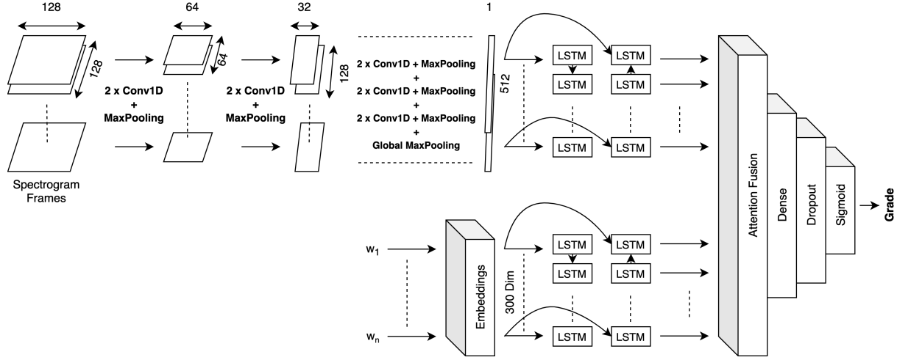

|
Sumit Sarin I am an MS in Computer Science student at Columbia University in New York, working on computer vision and machine learning problems as a Research Assistant (RA) with Prof. Carl Vondrick. I completed my bachelors at Netaji Subhas Institute (now University) of Technology (NSIT) in New Delhi, where I worked with Prof. Smriti Srivastava on computer vision, biometrics and multimodal learning. |

|
ResearchRepresentative papers. |
|
CNN-based Multimodal Touchless Biometric Recognition System using Gait and Speech
Sumit Sarin, Antriksh Mittal, Anirudh Chugh, Smriti Srivastava Journal of Intelligent & Fuzzy Systems, 2022. We proposes a novel touchless multimodal person identification model using deep learning techniques by combining the gait and speech modalities. |
|
|  |
Multi-modal Automated Speech Scoring using Attention Fusion
Manraj Singh Grover, Yaman Kumar, Sumit Sarin, Payman Vafaee, Mika Hama, Rajiv Ratn Shah Arxiv. In this study, we propose a novel multi-modal end-to-end neural approach for automated assessment of non-native English speakers' spontaneous speech using attention fusion. |
|
Website credits: Jon Barron. |